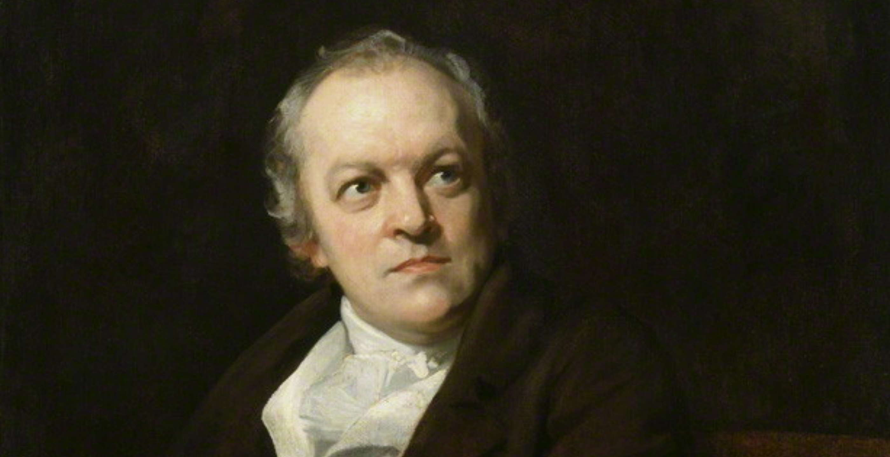

17 south molton street
London
W1K 5QT
UK
William Blake (28 November 1757 – 12 August 1827) was an English poet, painter, and printmaker. Largely unrecognised during his life, Blake is now considered a seminal figure in the history of the poetry and visual art of the Romantic Age. What he called his "prophetic works" were said by 20th-century critic Northrop Frye to form "what is in proportion to its merits the least read body of poetry in the English language". His visual artistry led 21st-century critic Jonathan Jones to proclaim him "far and away the greatest artist Britain has ever produced". In 2002, Blake was placed at number 38 in the BBC's poll of the 100 Greatest Britons. While he lived in London his entire life, except for three years spent in Felpham, he produced a diverse and symbolically rich collection of works, which embraced the imagination as "the body of God" or "human existence itself".
Although Blake was considered mad by contemporaries for his idiosyncratic views, he is held in high regard by later critics for his expressiveness and creativity, and for the philosophical and mystical undercurrents within his work. His paintings and poetry have been characterised as part of the Romantic movement and as "Pre-Romantic". In fact, he has been said to be "a key early proponent of both Romanticism and Nationalism". A committed Christian who was hostile to the Church of England (indeed, to almost all forms of organised religion), Blake was influenced by the ideals and ambitions of the French and American revolutions. Though later he rejected many of these political beliefs, he maintained an amiable relationship with the political activist Thomas Paine; he was also influenced by thinkers such as Emanuel Swedenborg. Despite these known influences, the singularity of Blake's work makes him difficult to classify. The 19th-century scholar William Michael Rossetti characterised him as a "glorious luminary", and "a man not forestalled by predecessors, nor to be classed with contemporaries, nor to be replaced by known or readily surmisable successors".
Ciela | Developed & Curated by Ciela Starlight